清晨微型电子图书馆， 提供免费TXT、PDF、Kindle版本的电子书下载（以中文为主，英文作为收藏）。一些书籍只提供拼音书名， 去除敏感。 开放的书籍提供书皮封面。清晨微型图书馆，版权归于个人所有。
点击图片即可以开始阅读。也提供PDF下载！
PDF下载
中文名：juyingguo。 作者：武志红。上传时间：2019/8/2。
PDF下载中文名：三体。 作者：刘慈欣。上传时间：2019/8/3。
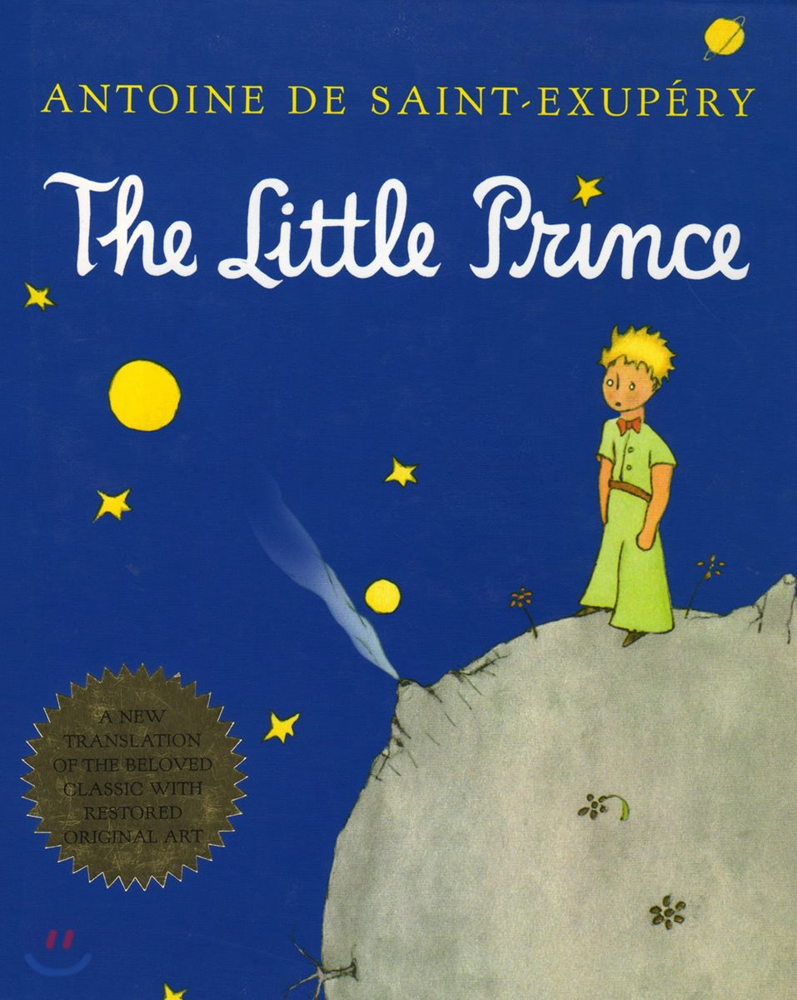中文名：小王子。 作者：圣埃克苏佩里。上传时间：2019/8/3。
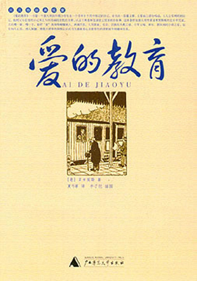 PDF下载中文名：爱的教育。 作者：埃迪蒙托·德·亚米契斯。上传时间：2019/8/3。
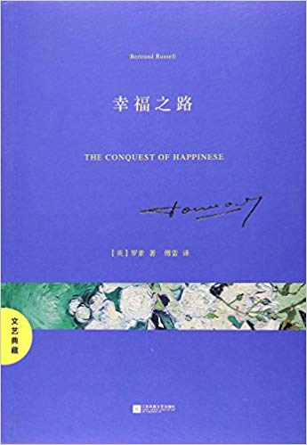 PDF下载中文名：幸福之路。 作者：贝特兰·罗素（Bertrand Russell）。上传时间：2019/8/2。
 PDF下载
PDF下载
中文名：人类简史。 作者：[以]尤瓦尔·赫拉利 (Yuval Noah Harari）。上传时间：2019/8/2。
中文名：1984。 作者：乔治·奥威尔。上传时间：2019/8/3。
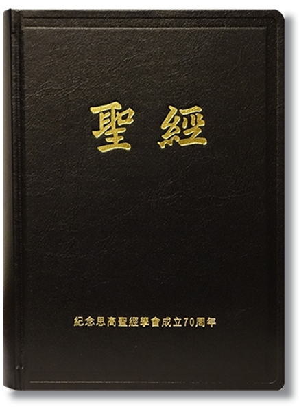中文名：圣经。 作者：×××。上传时间：2019/8/3。
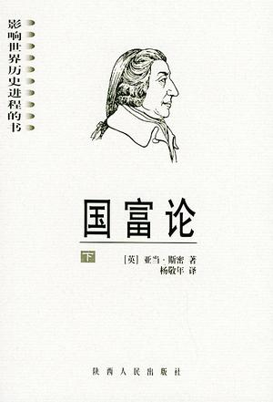中文名：国富论。 作者：【英】亚当·斯密。上传时间：2019/8/3。
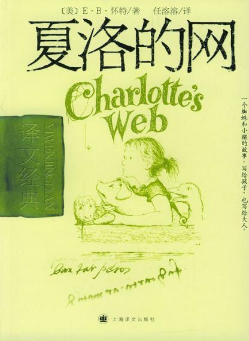 英文版中文名：夏洛的网。 作者：E·B·怀特(White E.B.)。上传时间：2019/8/3。
中文名：局外人。 作者：阿尔贝·加缪。上传时间：2019/8/3。
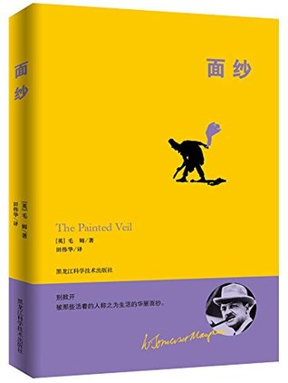《面纱》解开我的心结，让我死心，让我透彻，让我明白那些自以为是的情感不过是自我酝酿的错觉。---豆瓣网友
中文名：面纱。 作者：W.萨默塞特·毛姆。上传时间：2019/8/3。

中文名：富爸爸，穷爸爸。 作者：罗伯特·清崎。上传时间：2019/8/3。
中文名：小狗钱钱。 作者：博多·舍费尔。上传时间：2019/8/3。
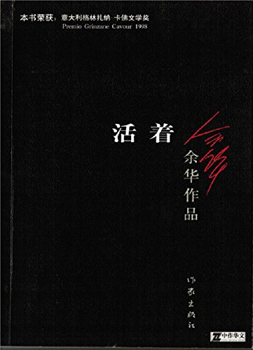中文名：活着。 作者：余华。上传时间：2019/8/3。

中文名：商君书。 作者：×××。上传时间：2019/8/3。
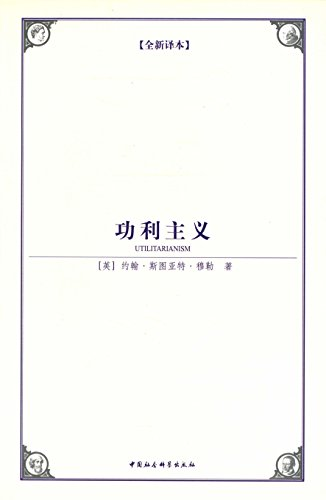中文名：功利主义。 作者：[英]约翰·穆勒。上传时间：2019/8/3。
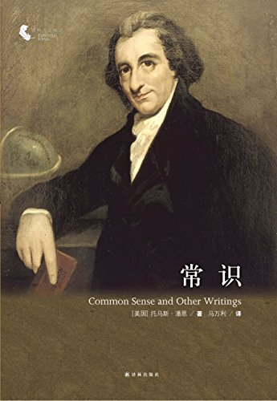中文名：常识。 作者：[美] 托马斯·潘恩。上传时间：2019/8/3。

中文名：论美国的民主。 作者：[法]托克维尔。上传时间：2019/8/3。
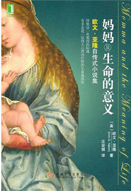中文名：好妈妈及生命的意义。 作者：（美）欧文 D.亚隆。上传时间：2019/8/3。

中文名：社会契约论。 作者：（法）卢梭。上传时间：2019/8/3。

中文名：论法的精神。 作者：（法）孟德斯鸠。上传时间：2019/8/3。
中文名：论自由。 作者：[英] 约翰·穆勒。上传时间：2019/8/3。
英文名：Word Power Made Easy。 作者：Norman Lewis。上传时间：2019/8/2。
注：该版本主要在于尝试。